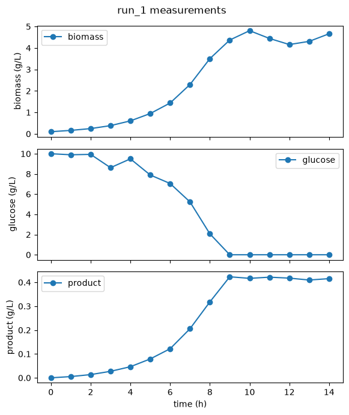

1. Import your Data¶
Turn a CSV of experimental measurements into a hybrax.format
BioProcessCollectionthat you can save, share and train on.
Hybrax only requires you to import your training data once into its JSON format. Everything downstream
is derived from your data entered in this step.
Here, we build a simple batch run with three measured species and no volume
changes. However, the Hybrax data format is designed to accomodate a diverse set of bioprocess conditions, for example
1.1 Example data¶
run,time_h,biomass_gL,glucose_gL,product_gL
run_1,0.0,0.1000,10.0000,0.0000
run_1,1.0,0.1613,9.8987,0.0052
run_1,2.0,0.2452,9.9369,0.0135
run_1,3.0,0.3831,8.6197,0.0272
run_1,4.0,0.6045,9.4939,0.0465
...
One row per sample, one column per assay. Three runs share the file; we build run_1.
import pandas as pd
df = pd.read_csv(RAW)
run_1 = (
df[df["run"] == "run_1"]
.sort_values("time_h")
.rename(columns={"time_h": "time", "biomass_gL": "biomass",
"glucose_gL": "glucose", "product_gL": "product"})
)
print(len(run_1), "samples from", run_1["time"].iloc[0], "to", run_1["time"].iloc[-1], "h")
15 samples from 0.0 to 14.0 h
import matplotlib.pyplot as plt
fig, axes = plt.subplots(3, 1, sharex=True, figsize=(6, 7))
for ax, name in zip(axes, ("biomass", "glucose", "product")):
ax.plot(run_1["time"], run_1[name], marker="o", label=name)
ax.set_ylabel(f"{name} (g/L)")
ax.legend()
axes[-1].set_xlabel("time (h)")
fig.suptitle("run_1 measurements")
fig.tight_layout()

1.2 Measurements become TimeSeries¶
Every time-varying quantity in hybrax.format is a TimeSeries which pairs times and values.
import numpy as np
import hybrax.format as hxf
biomass = hxf.TimeSeries(
times=run_1["time"].to_numpy(),
values=run_1["biomass"].to_numpy(),
)
biomass
TimeSeries(times=f64[15], values=f64[15], jump_times=f64[0])
Notes
Each measured species is its own
TimeSeriesnaturally enabling irregular sampling.The
timesvector must be strictly increasing.jump_times(optional) represent discontinuities in the data (e.g. volume jump due to bolus feed). This is important forhybrax.trainlater as it tells the ODE solver where to split the integration into continuous segments.For a quantity that genuinely does not change, use
hxf.StaticVariable(value)instead.
1.3 Concentrations become ReactorMediumComponents¶
The reactor medium is what is in the vessel. Each component carries its own unit, because hybrax.format never converts units for you: it only checks that you were consistent.
components = {
name: hxf.ReactorMediumComponent(
name=name,
unit="g/L",
concentration=hxf.TimeSeries(
times=run_1["time"].to_numpy(),
values=run_1[name].to_numpy(),
),
bounds=(0.0, None), # metadata: a concentration cannot be negative
)
for name in ("biomass", "glucose", "product")
}
reactor_medium = hxf.ReactorMedium(
name="defined_medium",
density=1.0,
density_unit="kg/L",
components=components,
)
from pprint import pprint
pprint(reactor_medium.components)
{'biomass': ReactorMediumComponent(name='biomass',
unit='g/L',
concentration=TimeSeries(times=f64[15], values=f64[15], jump_times=f64[0]),
pseudobatch_concentration=None,
bounds=(0.0, None)),
'glucose': ReactorMediumComponent(name='glucose',
unit='g/L',
concentration=TimeSeries(times=f64[15], values=f64[15], jump_times=f64[0]),
pseudobatch_concentration=None,
bounds=(0.0, None)),
'product': ReactorMediumComponent(name='product',
unit='g/L',
concentration=TimeSeries(times=f64[15], values=f64[15], jump_times=f64[0]),
pseudobatch_concentration=None,
bounds=(0.0, None))}
Notes
The
boundsare metadata, not constraints. Nothing inHybraxenforces bounds per default. They are recorded so downstream consumers (hybrax.train’s loss module, for instance) can build soft penalties from them.The units are explicitly required. This avoids ambiguity and enables validation downstream.
1.4 The clock and the vessel¶
time_axis = hxf.TimeAxis(
unit="h",
start=0.0,
end=14.0,
time_reference="inoculation", # what t = 0 means
)
volume = hxf.Volume(initial_volume=1.0, unit="L") # batch: nothing moves volume
time_reference is what makes runs from different sources alignable: “t = 0 is
inoculation” and “t = 0 is first feed” are different clocks, and later you will want to
know which one you had.
Volume with no volume_changes is a true batch. Note what this claims: no feeds, no
boluses, and no sampling volume. That is a real assertion about the simulated experiment. If
your real world data contains volume changes, see
Volume, feeds and events.
1.5 Assemble the BioProcess¶
process = hxf.BioProcess(
metadata=hxf.BioProcessMetadata(
name="run_1",
process_type="batch",
notes="Simulated E. coli batch culture on glucose.",
),
time_axis=time_axis,
volume=volume,
reactor_medium=reactor_medium,
)
That is the whole process. Notice what you did not write: any dynamics. hybrax.format generated a default reaction ODE for you:
print("rates :", list(process.reaction_ode.rates))
print("derivatives:", process.reaction_ode.derivatives)
rates : ['q_biomass', 'q_glucose', 'q_product']
derivatives: {'biomass': 'q_biomass * biomass', 'glucose': 'q_glucose * biomass', 'product': 'q_product * biomass'}
Each species gets a specific rate q_<species>, and its derivative is
q_<species> * biomass. Those rates are exactly what a model will predict later.
This is why a component must be called biomass
Auto-generation makes every rate specific (per unit biomass) so it needs to know
which component the biomass is. Without one, constructing the BioProcess raises
immediately. If your data has no biomass, or you want different dynamics, write
reaction_ode yourself: The Bioprocess ODE.
1.6 Collect and save¶
Setting case_id/organism/citation on a BioProcessCollection marks it as
a full case study, i.e. all experiments pertaining to a certain publication or
process development campaign. case_id is also the natural grouping for
cross-validation later. Leaving those unset (the default) is fine too: this
means raw or intermediate data with no case-study identity yet, the same
container either way.
collection = hxf.BioProcessCollection(
case_id="my_first_dataset",
organism="Escherichia coli",
citation="Simulated data: tutorial only.",
processes={"run_1": process},
)
out = Path("../_data/out/runs/tutorial_01").resolve()
out.mkdir(parents=True, exist_ok=True)
hxf.serialization.save_process_collection(collection, out / "data.json")
print(f"./{(out / 'data.json').relative_to(out.parents[4])}")
./source/_data/out/runs/tutorial_01/data.json
Note: save/load functions live on hxf.serialization, not on the package root.
Now we can have a look at the full JSON file describing the dataset we just created:
Full data.json
{
"case_id": "my_first_dataset",
"organism": "Escherichia coli",
"citation": "Simulated data: tutorial only.",
"metadata": null,
"processes": {
"run_1": {
"metadata": {
"name": "run_1",
"process_type": "batch",
"notes": "Simulated E. coli batch culture on glucose."
},
"time_axis": {
"unit": "h",
"start": 0.0,
"end": 14.0,
"time_reference": "inoculation"
},
"reactor_medium": {
"name": "defined_medium",
"density": 1.0,
"density_unit": "kg/L",
"components": {
"biomass": {
"name": "biomass",
"unit": "g/L",
"concentration": {
"times": {
"__ndarray__": [
0.0,
1.0,
2.0,
3.0,
4.0,
5.0,
6.0,
7.0,
8.0,
9.0,
10.0,
11.0,
12.0,
13.0,
14.0
],
"dtype": "float64"
},
"values": {
"__ndarray__": [
0.1,
0.1613,
0.2452,
0.3831,
0.6045,
0.9465,
1.4373,
2.2987,
3.5031,
4.3707,
4.8063,
4.4439,
4.1604,
4.309,
4.6623
],
"dtype": "float64"
},
"type": "TimeSeries",
"derived": false,
"jump_times": {
"__ndarray__": [],
"dtype": "float64"
},
"continuity_side": "right"
}
},
"glucose": {
"name": "glucose",
"unit": "g/L",
"concentration": {
"times": {
"__ndarray__": [
0.0,
1.0,
2.0,
3.0,
4.0,
5.0,
6.0,
7.0,
8.0,
9.0,
10.0,
11.0,
12.0,
13.0,
14.0
],
"dtype": "float64"
},
"values": {
"__ndarray__": [
10.0,
9.8987,
9.9369,
8.6197,
9.4939,
7.8949,
7.0528,
5.2291,
2.0724,
0.0,
0.0,
0.0,
0.0,
0.0,
0.0
],
"dtype": "float64"
},
"type": "TimeSeries",
"derived": false,
"jump_times": {
"__ndarray__": [],
"dtype": "float64"
},
"continuity_side": "right"
}
},
"product": {
"name": "product",
"unit": "g/L",
"concentration": {
"times": {
"__ndarray__": [
0.0,
1.0,
2.0,
3.0,
4.0,
5.0,
6.0,
7.0,
8.0,
9.0,
10.0,
11.0,
12.0,
13.0,
14.0
],
"dtype": "float64"
},
"values": {
"__ndarray__": [
0.0,
0.0052,
0.0135,
0.0272,
0.0465,
0.0791,
0.1218,
0.2056,
0.3178,
0.423,
0.4165,
0.4214,
0.4174,
0.4095,
0.4153
],
"dtype": "float64"
},
"type": "TimeSeries",
"derived": false,
"jump_times": {
"__ndarray__": [],
"dtype": "float64"
},
"continuity_side": "right"
}
}
}
},
"process_variables": {},
"volume": {
"initial_volume": 1.0,
"unit": "L",
"volume_changes": {}
},
"reaction_ode": {
"algebraic": {},
"rates": {
"q_biomass": null,
"q_glucose": null,
"q_product": null
},
"derivatives": {
"biomass": "q_biomass * biomass",
"glucose": "q_glucose * biomass",
"product": "q_product * biomass"
}
}
}
}
}
1.7 Check the round trip¶
reloaded = hxf.serialization.load_process_collection(out / "data.json")
run = reloaded.processes["run_1"]
print("runs :", list(reloaded.processes))
print("components :", list(run.reactor_medium.components))
print("first 3 t :", np.asarray(run.reactor_medium.components["biomass"].concentration.times)[:3])
print("first 3 X :", np.asarray(run.reactor_medium.components["biomass"].concentration.values)[:3])
runs : ['run_1']
components : ['biomass', 'glucose', 'product']
first 3 t : [0. 1. 2.]
first 3 X : [0.1 0.1613 0.2452]
What you learned¶
Every time-varying quantity is a
TimeSeries; every constant is aStaticVariable.Components are grouped by physical role: reactor medium, volume, process variables.
boundsandtime_referenceare metadata, and both matter later.hybrax.format writes the default biology for you, in terms of specific rates.
What’s next¶
You can run the full tutorial at examples/tutorial_01_your_first_dataset/run.py.
Tutorial 2: check that the package understood your data the way you meant it.
Measuring something that is not a concentration (pH, DO, off-gas)? That is a process variable: The data model.
Fed-batch? Volume, feeds and events, then Gallery: fed-batch.